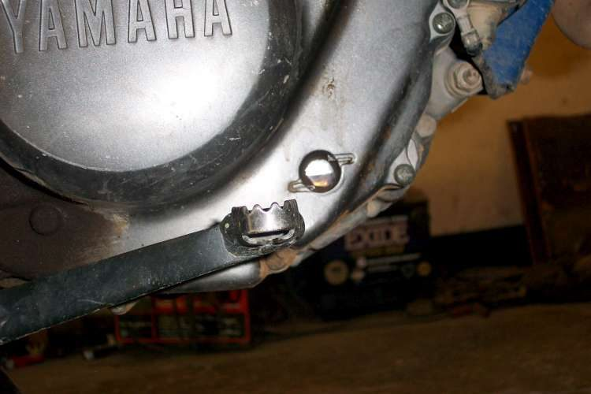
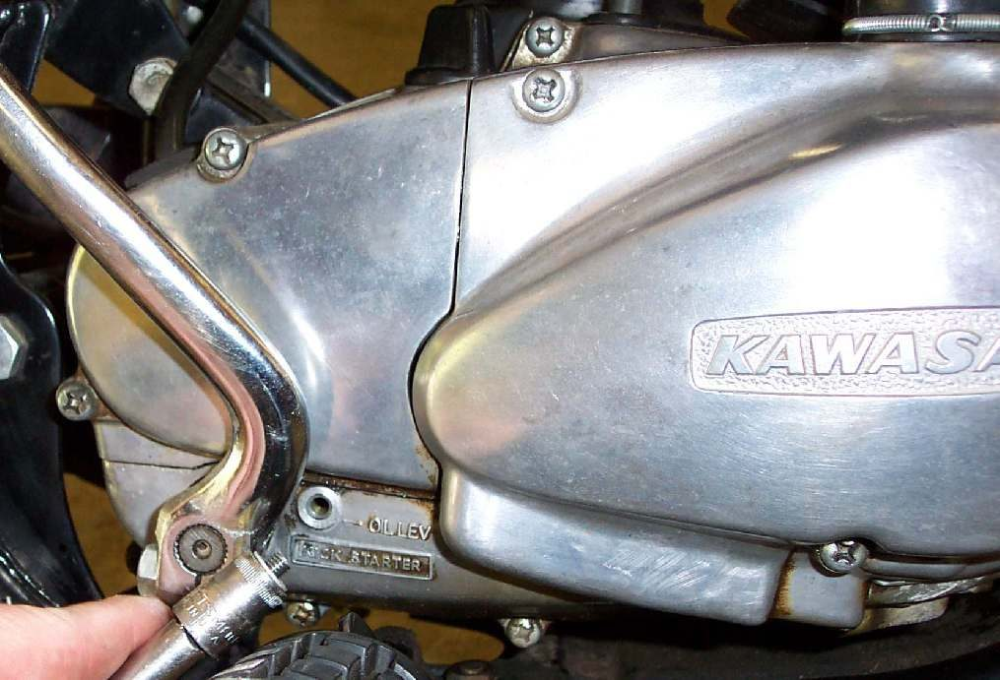

Not every engine has a dipstick. Some have a clear window in the crankcase with high and low marks. Some have a level plug, a threaded hole set at the correct oil height. The bike must be upright for all three methods.
Safety
- Hot engine parts and hot oil. Let the engine cool a little before removing a plug.
- Keep the bike upright and steady.
Steps for a sight window
- Stand the bike upright and wait for the oil to settle.
- Read the level between the high and low marks. Add or drain oil to bring it between them.
- If the window looks empty, the oil may be clean and a little high, so it is hard to see. Lean the bike slightly from upright. The real level should show. If it does not, add a little oil and lean it again.
- If the level cannot be found, drain all the oil and refill with the exact amount in the manual, then look again.
- Old plastic can discolour. If the window cannot be read, use the manual quantity instead.
Steps for a level plug
- With the bike upright, remove the level plug.
- Add oil through the filler until oil just starts to come out of the hole.
- Refit the plug with its washer.
Why the level matters
Too little oil wrecks an engine. Too much cuts the air space inside the engine and raises the pressure. This can cause smoke and push oil out through seals and the breather.
Check your work
- The level reads correct after the engine has run and rested.
If it did not fix the problem
- Oil sight window looks empty or the level is unclear.
- Check the engine oil level for dipstick engines.